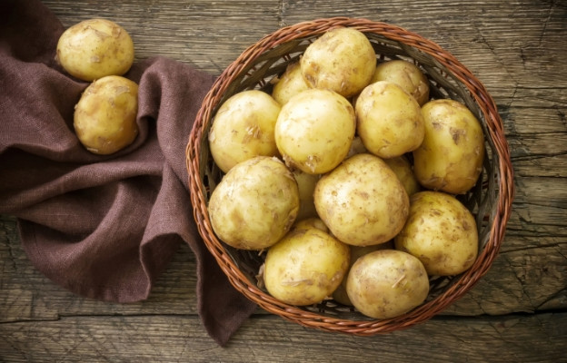
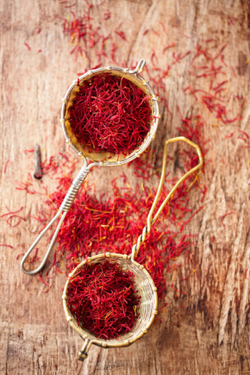
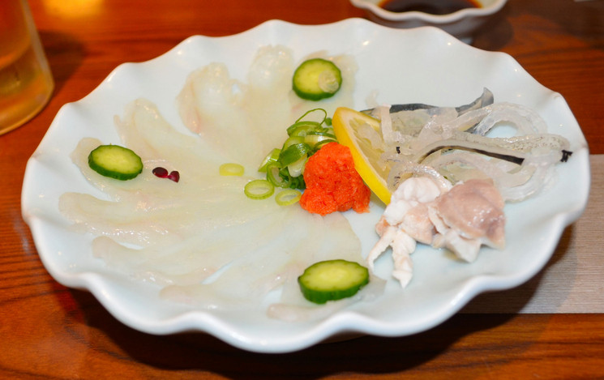

Die teuerste Schokolade – hergestellt von der libanesischen Schokoladenfabrik Patchi zum Verkauf in der Ladenkette Harrods – 5.000 britische Pfund pro Schachtel. Es enthält 49 Bonbons, eingewickelt in handgemachte indische Seide, verziert mit Seidenrosen, Swarovski-Kristallen und Gold. Auch die Box ist nicht gewöhnlich – sie besteht aus Leder und Seide und die Fächer darin – aus Gold und Platin.
2. Kaffee
Der teuerste Kaffee – Der teuerste Kaffee der Welt ist Kopi Luwak und wird aus Bohnen hergestellt, die durch den Magen und Darm eines kleinen Tieres namens Asiatische Zibetpalme gelangt sind. Die Zibetkatze galt als Schädling, bevor entdeckt wurde, dass ihre Verdauungsenzyme den Geschmack von Kaffee verbesserten, indem sie dessen Bitterkeit beseitigten. Die Anwohner sammeln die Kaffeebohnen, die die Zibetkatzen nicht verdaut haben, deren Preis 300-400 Dollar pro Kilogramm erreicht.
3. Kartoffeln

Die teuersten Kartoffeln – Die berühmten Kartoffeln von der Westküste Frankreichs, genauer gesagt von der Insel Noirmoutier, kosten etwa 500 Euro pro Kilogramm. Es stellt sich heraus, dass dieses Lebensmittel ein Vermögen wert sein kann, wenn es mit Algen gedüngt wird. Sie haben einen leicht salzigen Meeresgeschmack mit einem dezenten Zitronenaroma und werden einmal im Jahr von Hand geerntet, um Verletzungen aufgrund ihrer Zerbrechlichkeit zu vermeiden.
4. Gewürz
Das teuerste Gewürz der Welt – Das teuerste Gewürz der Welt heißt Safran. Der Preis für ein Kilogramm echten Safrans kann bis zu 6.000 US-Dollar erreichen. Es zeichnet sich durch seine arbeitsintensive Anbau- und Gewinnungstechnologie aus.

5. Delikatesse

Das gefährlichste und teuerste Gericht – Die geheimnisvollste Delikatesse der Tierwelt ist der berühmte Fugu-Fisch – das gefährlichste und teuerste Gericht der japanischen Küche. Zwischen 100 und 500 Dollar kostet es das Gefühl einer leichten narkotischen Euphorie, die sanft in eine vorübergehende Lähmung aller Organe übergeht und umgekehrt. Nur die wirklich Mutigen wagen es, Fugu auszuprobieren und die Wirkung des nervenlähmenden Giftes der Natur zu erleben, für das es kein Gegenmittel gibt.